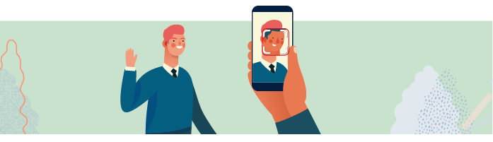

Mes objectifs
Expliquer ce qu'est
l'intelligence artificielle
Identifier ses défis et ses
opportunités
Décrire scientifiquement un
projet d'IA et ses sous-disciplines
Pourquoi cette formation ?
Comprendre le monde qui
m'entoure
Commencer à me préparer pour
mes études futures
Les outils que j'ai utilisé
Navigateur WEB : site
internet GitHub
Quelques notions acquises
Les deux disciplines de l'IA
Le Machine Learning ou apprentissage automatique
L’apprentissage automatique, ou Machine Learning, est un sous-ensemble de
l’intelligence artificielle qui permet à un programme informatique
d'effectuer une tâche pour laquelle il n'est pas programmé explicitement :
il est programmé pour apprendre à la faire. On donne au programme de
nombreuses données et il apprend à partir de ces données.
Le Deep Learning ou apprentissage profond
L'apprentissage profond, ou Deep Learning, repose sur la construction de
réseaux de neurones artificiels. Ces réseaux, composés de milliers, voire
millions de neurones, sont inspirés du cerveau humain. Le Deep Learning
s’applique souvent sur des quantités de données beaucoup plus importantes
que le Machine Learning. Il apprend de cette masse d’exemples et obtient
dans certains cas de bien meilleurs résultats que les disciplines
traditionnelles d’intelligence artificielle.

Les enjeux des décisions algorithmiques
Nous pouvons voir, les algorithmes peuvent reproduire les biais. Les
algorithmes ne sont jamais neutres, car ils s’appuient sur des bases de
données d’apprentissage. Les données peuvent être biaisées par exemple en
étant une représentation imparfaite du monde (tel qu'un algorithme de
reconnaissance visuelle qui apprend majoritairement sur des sujets blancs),
ou en imitant un monde imparfait. Ainsi, si les données contiennent des
traces de discrimination, l'algorithme pourra à son tour avoir un
comportement discriminatoire.
Par exemple, Amazon a mis au point un logiciel de recrutement pour analyser les
candidatures à ses offres d’emploi. Amazon a réalisé que l’algorithme était
en fait biaisé à l’encontre des candidatures féminines. Le système écartait
de lui-même plus souvent les candidatures de femmes que celles des hommes.
Et pour cause : le système avait été entraîné sur les données de
l’organigramme des employés d’Amazon où 85 % des effectifs étaient
masculins. Une fois cette information révélée, Amazon a décidé d’abandonner
l’outil.
